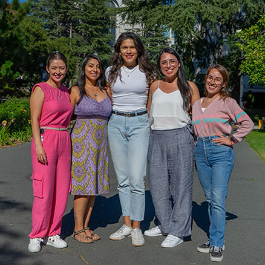

Quienes somos
Nuestra historia
En abril de 2024 nació esta iniciativa a través de conversaciones como grupo de amigas residiendo en Berkeley, California. Las mujeres migrantes en Estados Unidos experimentamos complejidades y limitaciones no sólo a nivel de nuestra formación cientifica, sino también desde un punto de vista personal. Emigrar no es fácil. Persiguiendo nuestros sueños dejamos atrás nuestra cultura, idioma, familia, y seres queridos. Cuando emigramos con nuestras familias, lo hacemos también con la carga financiera y emocional que esto conlleva.
Las co-fundadoras de Latinas en STEM somos:
B. Gabriela Arango, Ph.D.(c), bióloga mexicana que estudia la reacción a la falta de oxígeno en tortugas marinas.
Francesca Burgos-Bravo, Ph.D., biofísica chilena, estudiando transcripción de molécula única.
Laura Gómez, Ph.D.(c), neurobióloga y física colombiana que estudia circuitos neuronales.
Diana Moreno-Santillán, Ph.D., bióloga evolutiva y bioinformática mexicana, experta en la evolución de los genomas de murciélagos y focas.
M. Fernanda Palominos, Ph.D., bióloga del desarrollo chilena, que estudia las bases genéticas de la diversificación craneofacial de peces.
Mujeres Latinas en STEM como agentes de cambio:
Con el patrocinio de la
Embajada de Chile en Estados Unidos, del Consulado General de México en San Francisco, el Consulado de Chile en San Francisco, el Consejo Chile-California, Berkeley Postdoc Association, y la Dean's Office of College of Letters & Science, University of California, Berkeley, estamos organizando nuestro primer encuentro en el Área de la Bahía, CA. ¡Te esperamos!